Handloom, coir mats come in different qualities, sizes and patterns with different pile height ( brush ). Creel Mats are best known for their elegance, thin brush and cheapness. They are also made with latex or rubber backing to make it non slip and more durable. they are available in natural or bleached patterns with or with out stencil designs.
The normal sizes of door mats are:
Size Dimension Approx
0 22 X 13 inches 550 X 330 mm
1 24 X 14 .. 600 X 350 ..
2 27 X 16 .. 700 X 400 ..
3 30 X 18 .. 750 X 450 ..
4 33 X 20 .. 850 X 500 ..
5 36 X 22 .. 900 X 550 ..
6 39 X 24 .. 1000 X 600 ..
7 42 X 26 .. 1050 X 650 ..
8 45 X 28 .. 1150 X 700 ..
9 48 X 30 .. 1200 X 750 ..
The mats are packed normally in bales of 10 to 25 mats in a single layer of jute hessian cloth. As per order, the mats can be packed in different quantities per bale. They can also be individually packed in polythene bags, printed or plain, and also in paper carton boxes to contain 10 to 20 mats, all at extra cost.
a. Beach Creel Mats ( BC1, BC2 etc )
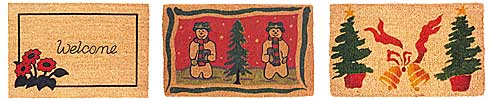
Beach Creel Mats (BC1, BC2 etc) are made of beach yarn which is the cheapest.
b. Vycome Creel Mats ( VC1, VC2 etc )
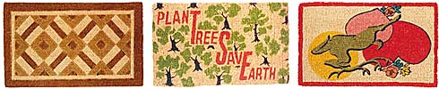
Vycome Creel Mats (VC1, VC2 etc) are made of vycome yarn which is superior with better colour and lesserbimpurities and have more compact pile
c. Carnatic Mats (VC8)
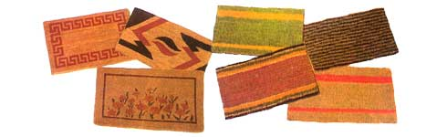
These mats are from the creel variety with the thinnest pile height in brush mat family. They are made with jute in the base fabric They are available in plain natural or solid colour or in stripe, mottled, jaspe or stencilled patterns. They are also used for wall to wall pile carpeting or as rugs
d. Fibre Mats ( FM2, FM3 )
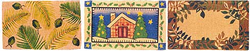
Fibre mats are made by insertion of tufts of coir fibre in the base fabric of coir yarn. Fibre mats have a very compact sturdy and thick brush and are heavy duty mats. They are available in natural or bleached patterns with or without stencilled or woven designs.
e. Rod Mats (BR, VR3)
Rod mats have thick brush formed out of coir yarn and are normally supplied in natural plain colour or with woven logos. They are available in 2 quanlities:
1.Beach Rod Mats: Made of beach yarn, they are the cheapest.
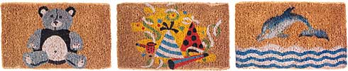
2.Vycome Rod Mats: Made of vycome yarn, they are superior with a thicker and plush brush.
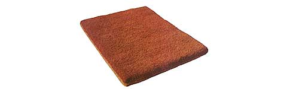
f. Sinnet or Chain Mats (SA, SR etc )
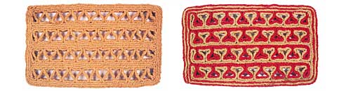
They are made out of Coir braids on specially designed wooden boards and are available single chain or double in natural, solid colour or fancy designs.
g. Corridor Mats ( AC, RC etc )
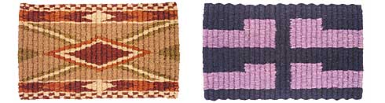
They are made on specially designed frames with the pattern effect produced by the weft strands. They are available in a wide range of designs.
h. Rope Mats or Lovers Knot Mats (LKA, LKR )
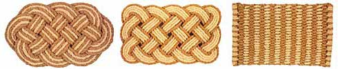
They are made out of coir rope in natural colour, solid shades or in multi coloured strands and are available in oval or rectangular shades.
I. Non Woven Carpets (FBRAI, RBMA )
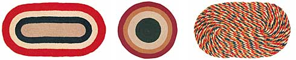
It is made by bonding to the compounded rubber base with Hessian or cotton gauge underlay, by vulcanization process.
J. Shaped Mats
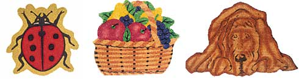
Special shape in handloom and PVC tufted mats can be made according to customs reuirement.
|